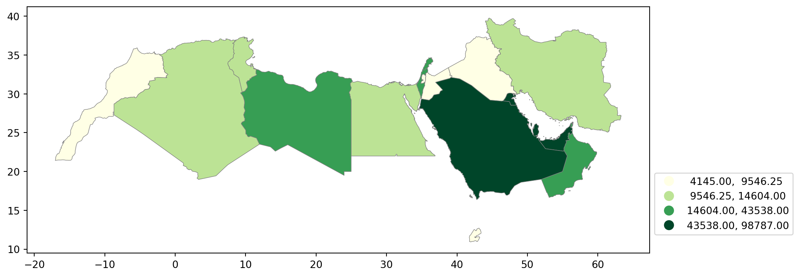

import matplotlib.pyplot as plt
import pandas as pd
import geopandas as gpd
import numpy as np
from pysal.viz import mapclassify
import seaborn as snsLab in Python
Choropleths
In this session, we will build on all we have learnt so far about loading and manipulating (spatial) data and apply it to one of the most commonly used forms of spatial analysis: choropleths. Remember these are maps that display the spatial distribution of a variable encoded in a color scheme, also called palette. Although there are many ways in which you can convert the values of a variable into a specific color, we will focus in this context only on a handful of them, in particular:
Unique values
Equal interval
Quantiles
Fisher-Jenks
Installing Packages
Before all this mapping fun, let us get the importing of libraries and data loading out of the way:
Data
We will be using World Bank data for this section, looking at World Development Indicators and Education Statistics. We will be focusing on the Middle East and North Africa (MENA). We start by loading the relevant geometries:
# Load the GeoJSON file into a GeoDataFrame
mena_sf = gpd.read_file("data/MENA/MENA.geojson")
# Plot the geometry to make sure it looks correct
mena_sf.plot()
plt.show()
Don’t forget that before you go further, you want to check the CRS of the sf object as well as the dataframe.
Answer
# Check the CRS of the GeoDataFrame
print(mena_sf.crs)
# Display the first few rows of the GeoDataFrame
print(mena_sf.head())EPSG:4326
name formal_en_name code_a2 code_a3 \
0 United Arab Emirates United Arab Emirates AE ARE
1 Bahrain Kingdom of Bahrain BH BHR
2 Iran Islamic Republic of Iran IR IRN
3 Iraq Republic of Iraq IQ IRQ
4 Israel State of Israel IL ISR
geometry
0 MULTIPOLYGON (((53.86305 24.23469, 53.88860 24...
1 POLYGON ((50.55161 26.19424, 50.59474 26.16031...
2 MULTIPOLYGON (((55.05437 25.86461, 55.04648 25...
3 POLYGON ((42.89674 37.32491, 42.93705 37.32015...
4 POLYGON ((35.80363 33.24846, 35.80766 33.20172... We then load the csv with some World Development Indicators data.
world_dev = pd.read_csv("data/MENA/mena_worlddevelop.csv")And join the two objects using the relevant codes.
# Join check that the code you are joining the data on is the same.
# First check the GeoDataFrame
mena_sf.head()
# Then the DataFrame
world_dev.head()
## rename code columns so they match
mena_sf.rename(columns={'code_a3': 'Country Code'}, inplace=True)Merge GeoDataFrame and DataFrame
world_dev_gdf = mena_sf.merge(world_dev, on='Country Code')Now we are fully ready to map!
Unique values
A choropleth for categorical variables simply assigns a different color to every potential value in the series. Variables could be both nominal or ordinal.
Nominal: Nominal variables represent categories or labels without any inherent order or ranking. The categories are distinct and do not have a natural progression or hierarchy, such as “apple,” “banana,” and “orange” for fruit types.
Ordinal : Ordinal variables represent categories or labels with a meaningful order or ranking. The relative order or hierarchy among the categories is significant, indicating a clear progression from lower to higher values, such as “low,” “medium,” and “high” for satisfaction levels.
In Python, creating categorical choropleths is possible with one line of code.
world_dev_gdf.plot(
column="income_group", # Specifies the column "income_group" to color the plot based on categories
categorical=True, # Indicates that the "income_group" column is categorical (not continuous)
legend=True # Adds a legend to the plot, showing the different categories of "income_group"
)
# Show the plot
plt.show()
Important
These maps are all a bit rough a need quite a bit more work. They are just a starting point.
Equal Interval
If, instead of categorical variables, we want to display the geographical distribution of a continuous phenomenon, we need to select a way to encode each value into a color. One potential solution is applying what is usually called “equal intervals”. The intuition of this method is to split the range of the distribution, the difference between the minimum and maximum value, into equally large segments and to assign a different color to each of them according to a palette that reflects the fact that values are ordered.
Creating the choropleth is relatively straightforward in Python. For example, to create an equal interval of GDP per capita in 2015 (v_2015).
First we need to prepare the data, going back to our data wrangling.
# Step 1: Filter rows where Series.Name is "GDP per capita, PPP (current international $)"
filtered_data = world_dev_gdf[world_dev_gdf["Series Name"] == "GDP per capita, PPP (current international $)"]
# Step 2: Remove rows where 'v_2015' is missing (i.e., remove NA values)
filtered_data = filtered_data.dropna(subset=["v_2015"])
# Step 3
filtered_data["v_2015"] = pd.to_numeric(filtered_data["v_2015"], errors='coerce').round()
filtered_data = filtered_data.dropna(subset=["v_2015"]) # Remove rows with NaN in 'v_2015'
filtered_data["v_2015"] = filtered_data["v_2015"].astype(int)
# Step 4: Store the final result in world_dev_filtered
world_dev_filtered = filtered_dataAn equal interval classification scheme produces a map of 5 classes where each class size is equal, so that each class has an equal range in between the low and high possible value. This allows for the legend to be easily understood by the viewer, since the legend entries are all the same size. However, this scheme does not show data which are skewed towards one side all that well.
fig, ax = plt.subplots(figsize=(15, 5)) # Increase the map size
# Plotting the GeoDataFrame `world_dev_filtered` on the `ax` axes
world_dev_filtered.plot(
column="v_2015", # Specify the column to be visualized; `v_2015` represents data for the year 2015
legend=True, # Add a legend to the map
scheme="equal_interval", # Use equal interval classification for the color scheme
k=7, # Divide the data into 7 intervals
cmap="YlGn", # Use the Yellow-Green colormap for coloring the map
legend_kwds={
'loc': 'center left', # Position the legend in the center left of the map
'bbox_to_anchor': (1.00, 0.2), # Anchor the legend at this position (right of the plot)
'fontsize': 10 # Set the font size of the legend text
},
edgecolor='grey', # Add grey contours around each geographical feature
linewidth=0.5, # Adjust the thickness of the contours (optional)
ax=ax # Specify the axes object to plot on
)
# Adjust the subplot parameters to give more space for the legend
plt.subplots_adjust(right=0.70) # Increase right space to accommodate a larger map
# Show the plot
plt.show()Pay attention to the key differences:
Instead of specifyig
categoricalasTrue, we replace it by the argument scheme, which we will use for all choropleths that require a continuous classification scheme. In this case, we set it toequal_interval.As above, we set the number of colors to 7. Note that we need not pass the bins we calculated above, the plotting method does it itself under the hood for us.
As optional arguments, we can change the colourmap to a yellow to green gradient, which is one of the recommended ones by
ColorBrewerfor a sequential palette.
Mapclassify
The way colour maps are scaled can also be manipulated with the scheme option (if you have mapclassify installed).
The scheme option can be set to any scheme provided by mapclassify (e.g. ‘box_plot’, ‘equal_interval’, ‘fisher_jenks’, ‘fisher_jenks_sampled’, ‘headtail_breaks’, ‘jenks_caspall’, ‘jenks_caspall_forced’, ‘jenks_caspall_sampled’, ‘max_p_classifier’, ‘maximum_breaks’, ‘natural_breaks’, ‘quantiles’, ‘percentiles’, ‘std_mean’ or ‘user_defined’).
Arguments can be passed in classification_kwds dict.
See the mapclassify documentation for further details about these map classification schemes.
It is important to understand that equal intervals can first and foremost be visualised on the data distribution.
classi = mapclassify.EqualInterval(world_dev_filtered["v_2015"], k=7)
classiEqualInterval
Interval Count
----------------------------
[ 4145.00, 17665.29] | 10
(17665.29, 31185.57] | 1
(31185.57, 44705.86] | 2
(44705.86, 58226.14] | 3
(58226.14, 71746.43] | 1
(71746.43, 85266.71] | 0
(85266.71, 98787.00] | 1Once we have classified the variable, we can check the actual break points where values stop being in one class and become part of the next one:
classi.binsarray([17665.28571429, 31185.57142857, 44705.85714286, 58226.14285714,
71746.42857143, 85266.71428571, 98787. ])# Set up the figure
f, ax = plt.subplots(1)
# Plot the kernel density estimation (KDE)
sns.kdeplot(world_dev_filtered["v_2015"], fill=True)
# Add a blue tick for every value at the bottom of the plot (rugs)
sns.rugplot(world_dev_filtered["v_2015"], alpha=0.5)
# Loop over each break point and plot a vertical red line
for cut in classi.bins:
plt.axvline(cut, color='lightgreen', linewidth=1.25)
# Display image
plt.show()Technically speaking, the figure is created by overlaying a KDE plot with vertical bars for each of the break points. This makes much more explicit the issue highlighted by which the first two bin contain a large amount of observations while the one with top values only encompasses a handful of them.
Quantiles
One solution to obtain a more balanced classification scheme is using quantiles. This, by definition, assigns the same amount of values to each bin: the entire series is laid out in order and break points are assigned in a way that leaves exactly the same amount of observations between each of them. This “observation-based” approach contrasts with the “value-based” method of equal intervals and, although it can obscure the magnitude of extreme values, it can be more informative in cases with skewed distributions.
The code required to create the choropleth mirrors that needed above for equal intervals:
fig, ax = plt.subplots(figsize=(15, 5)) # Increase the map size
# Plotting the GeoDataFrame `world_dev_filtered` on the `ax` axes
world_dev_filtered.plot(
column="v_2015", # Specify the column to be visualized; `v_2015` represents data for the year 2015
legend=True, # Add a legend to the map
scheme="quantiles", # Use quantile interval classification for the color scheme
k=4, # Divide the data into 4 intervals
cmap="YlGn", # Use the Yellow-Green colormap for coloring the map
legend_kwds={
'loc': 'center left', # Position the legend in the center left of the map
'bbox_to_anchor': (1.00, 0.2), # Anchor the legend at this position (right of the plot)
'fontsize': 10 # Set the font size of the legend text
},
edgecolor='grey', # Add grey contours around each geographical feature
linewidth=0.5, # Adjust the thickness of the contours (optional)
ax=ax # Specify the axes object to plot on
)
# Adjust the subplot parameters to give more space for the legend
plt.subplots_adjust(right=0.70) # Increase right space to accommodate a larger map
# Show the plot
plt.show()
Note how, in this case, the amount of polygons in each color is by definition much more balanced (almost equal in fact, except for rounding differences). This obscures outlier values, which get blurred by significantly smaller values in the same group, but allows to get more detail in the “most populated” part of the distribution, where instead of only white polygons, we can now discern more variability.
To get further insight into the quantile classification, let’s calculate it with mapclassify:
classi = mapclassify.Quantiles(world_dev_filtered["v_2015"], k=4)
classiQuantiles
Interval Count
----------------------------
[ 4145.00, 9546.25] | 5
( 9546.25, 14604.00] | 4
(14604.00, 43538.00] | 4
(43538.00, 98787.00] | 5And, similarly, the bins can also be inspected:
classi.binsarray([ 9546.25, 14604. , 43538. , 98787. ])The visualization of the distribution can be generated in a similar way as well:
# Set up the figure
f, ax = plt.subplots(1)
# Plot the kernel density estimation (KDE)
sns.kdeplot(world_dev_filtered["v_2015"], fill=True)
# Add a blue tick for every value at the bottom of the plot (rugs)
sns.rugplot(world_dev_filtered["v_2015"], alpha=0.5)
# Loop over each break point and plot a vertical red line
for cut in classi.bins:
plt.axvline(cut, color='lightgreen', linewidth=1.25)
# Display image
plt.show()Fisher-Jenks
Equal interval and quantiles are only two examples of very many classification schemes to encode values into colors. As an example of a more sophisticated one, let us create a Fisher-Jenks choropleth.
fig, ax = plt.subplots(figsize=(15, 5)) # Increase the map size
# Plotting the GeoDataFrame `world_dev_filtered` on the `ax` axes
world_dev_filtered.plot(
column="v_2015", # Specify the column to be visualized; `v_2015` represents data for the year 2015
legend=True, # Add a legend to the map
scheme="fisher_jenks", # Use quantile interval classification for the color scheme
k=7, # Divide the data into 7 intervals
cmap="YlGn", # Use the Yellow-Green colormap for coloring the map
legend_kwds={
'loc': 'center left', # Position the legend in the center left of the map
'bbox_to_anchor': (1.00, 0.2), # Anchor the legend at this position (right of the plot)
'fontsize': 10 # Set the font size of the legend text
},
edgecolor='grey', # Add grey contours around each geographical feature
linewidth=0.5, # Adjust the thickness of the contours (optional)
ax=ax # Specify the axes object to plot on
)
# Adjust the subplot parameters to give more space for the legend
plt.subplots_adjust(right=0.70) # Increase right space to accommodate a larger map
# Show the plot
plt.show()The same classification can be obtained with a similar approach as before:
classi = mapclassify.FisherJenks(world_dev_filtered["v_2015"], k=7)
classiFisherJenks
Interval Count
----------------------------
[ 4145.00, 9238.00] | 5
( 9238.00, 15380.00] | 5
(15380.00, 22163.00] | 1
(22163.00, 36449.00] | 2
(36449.00, 48174.00] | 3
(48174.00, 69706.00] | 1
(69706.00, 98787.00] | 1Once we have classified the variable, we can check the actual break points where values stop being in one class and become part of the next one:
classi.binsarray([ 9238., 15380., 22163., 36449., 48174., 69706., 98787.])Now let’s look at the density plot
# Set up the figure
f, ax = plt.subplots(1)
# Plot the kernel density estimation (KDE)
sns.kdeplot(world_dev_filtered["v_2015"], fill=True)
# Add a blue tick for every value at the bottom of the plot (rugs)
sns.rugplot(world_dev_filtered["v_2015"], alpha=0.5)
# Loop over each break point and plot a vertical red line
for cut in classi.bins:
plt.axvline(cut, color='lightgreen', linewidth=1.25)
# Display image
plt.show()For example, the bin with highest values covers a much wider span that the one with lowest, because there are fewer states in that value range.
You will notice a lot cooler difference once you play around with a larger dataset.
Zooming into the map
A general map of an entire region, or urban area, can sometimes obscure local patterns because they happen at a much smaller scale that cannot be perceived in the global view. One way to solve this is by providing a focus of a smaller part of the map in a separate figure. Although there are many ways to do this in R, the most straightforward one is to define the bounding box.
As an example, let us consider the first ggplot map of this Lab:
Zoom into full map
# Setup the figure
f, ax = plt.subplots(1)
# Draw the choropleth
world_dev_gdf.plot(
column="income_group",
cmap="YlGn",
legend=True,
ax=ax
)
# Redimensionate X and Y axes to desired bounds
ax.set_ylim(30.520606, 36.285000)
ax.set_xlim(30.763478, 40.332570)
# Display image
plt.show()Additional resources
On Drawing beautiful choropleths.html with
Pythonandggplotsee hereIf you want to have a look at Choropleths in Python have a look at the chapter on choropleth mapping by Rey, Arribas-Bel and Wolf
Some more on mapping here